Observable outcome: each developer can prove one MSM relationship, identify inherited and local component state, choose the least destructive author action and predict which values will change before synchronization.
Topic summary
Multi-Site Management reuses AEM Sites content through maintained Live Copy relationships. A source page, blueprint configuration, Live Copy and per-resource relationship are distinct objects; path similarity or identical rendering does not prove that inheritance exists.
Predictable maintenance starts with evidence. Inspect the source, target, relationship status and effective rollout configuration; then distinguish a Live Copy Synchronize pull from a blueprint Rollout push. Cancel inheritance only at the component that needs local ownership, and keep MSM distribution separate from translation and component i18n.
- Prove the live relationship before changing content.
- Separate source content, blueprint configuration and Live Copy roles.
- Keep deliberate local ownership at the narrowest component.
- Predict trigger, direction, scope and action set before synchronization.
- Diagnose MSM, translation and i18n as separate responsibility lanes.
30-minute agenda
| Time | Slide | Facilitation |
|---|
| 0–2 | 1 · Opening | Frame live relationships, inheritance and synchronization. |
| 2–4 | 2 · Relationship | Contrast a maintained Live Copy with a one-time copy. |
| 4–7 | 3 · Vocabulary | Separate source, blueprint configuration, target and relationship. |
| 7–9 | 4 · Language structure | Map language masters to same-language market sites. |
| 9–12 | 5 · Inheritance | Cancel inheritance on one component while siblings remain linked. |
| 12–15 | 6 · Evidence | Trace the relationship through supported authoring views. |
| 15–18 | 7 · Direction | Compare Synchronize pull with Rollout push. |
| 18–21 | 8 · Configuration | Separate rollout triggers from synchronization actions. |
| 21–24 | 9 · Actions | Choose among cancel, suspend, reset and detach. |
| 24–26 | 10 · Localization | Separate MSM, translation and component i18n. |
| 26–28 | 11 · Key takeaways | Consolidate the source-to-result evidence chain. |
| 28–30 | 12 · Questions | Questions from the audience only. |
Complete slide deck
Study each slide with its presenter notes, then copy or download the PNG.
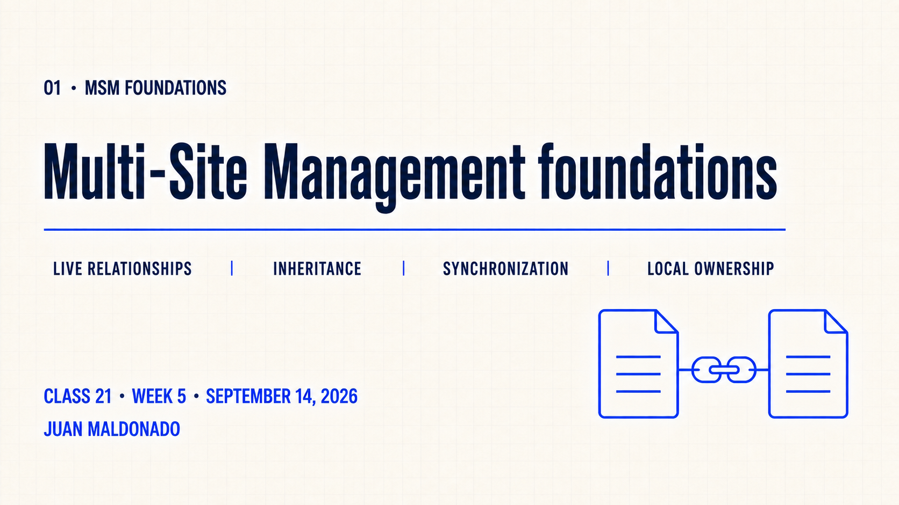
Detailed presenter notes
- Opening: introduce Multi-Site Management as the Week 5 topic.
- Subtopics: live relationships, inheritance, synchronization and local ownership.
- Transition: build the relationship model on the next slide.
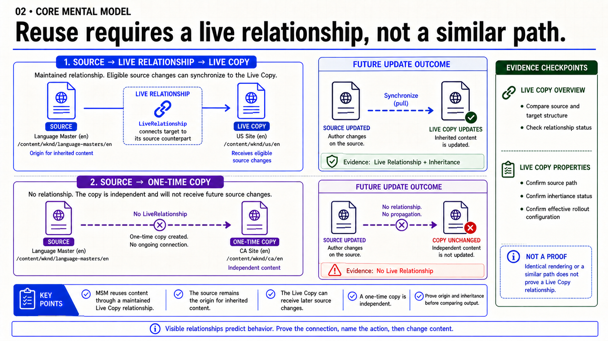
Detailed presenter notes
- Relationship: eligible source changes can reach a connected Live Copy later.
- Copy: a one-time copy is independent even when it looks identical today.
- Evidence: paths and rendering are clues, not proof.
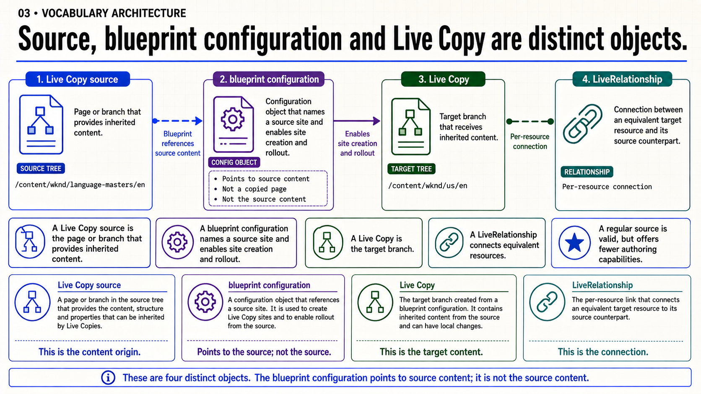
Detailed presenter notes
- Source: the page or branch provides inheritable content.
- Configuration: it references the source and enables author-facing creation and rollout.
- Connection: each LiveRelationship links an equivalent target resource to its source.
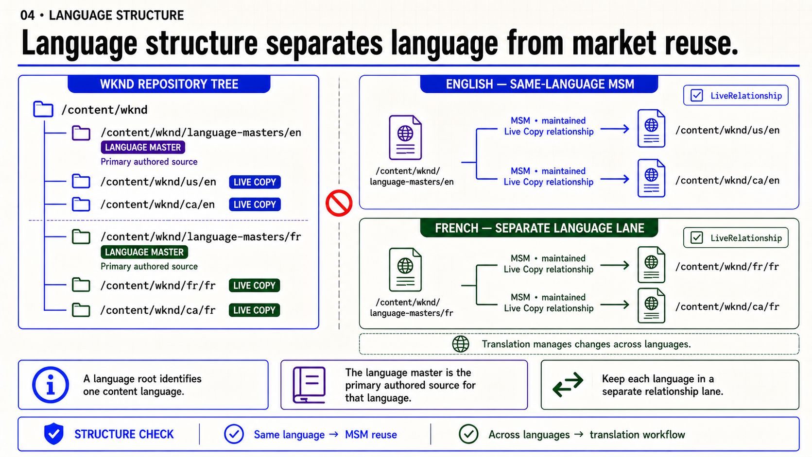
Detailed presenter notes
- Language master: the primary authored source for one language.
- Market reuse: English country sites inherit from the English source.
- Boundary: translation creates another language; MSM distributes within a language.
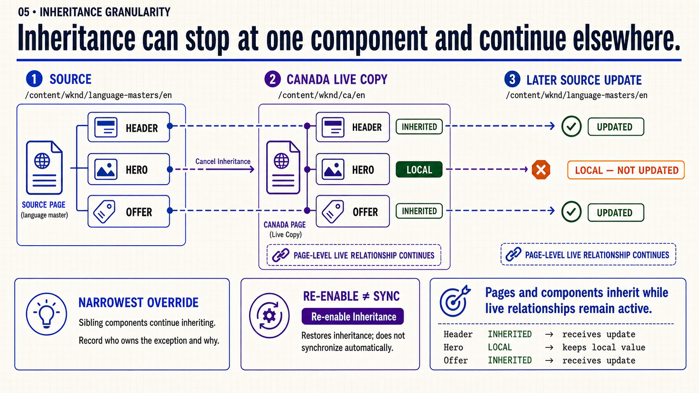
Detailed presenter notes
- Granularity: cancel inheritance only on the component that needs local ownership.
- Siblings: other components keep receiving eligible source changes.
- Re-enable: restoring the relationship does not synchronize automatically.
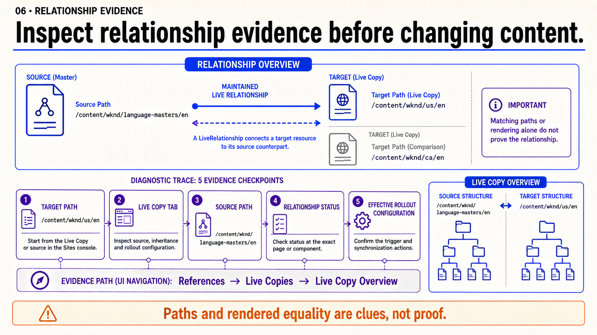
Detailed presenter notes
- Trace: start at the exact target path and inspect its Live Copy properties.
- Overview: compare source and target structure through References and Live Copy Overview.
- Granularity: inspect the exact page or component that appears stale.
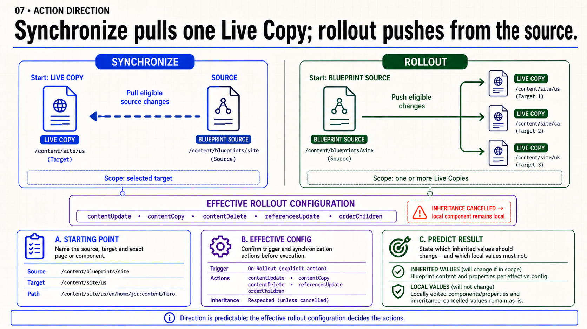
Detailed presenter notes
- Synchronize: begin on one Live Copy and pull eligible source changes.
- Rollout: begin on the blueprint and push to one or more Live Copies.
- Predict: name source, target, scope and protected local values first.
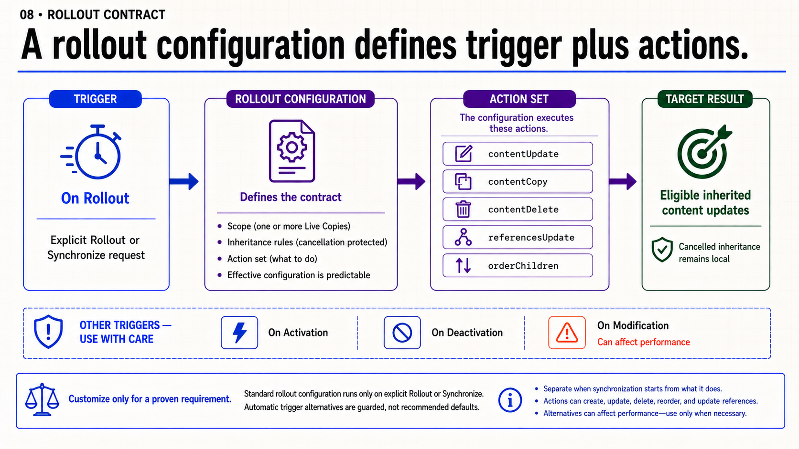
Detailed presenter notes
- Trigger: standard configuration starts from explicit Rollout or Synchronize.
- Actions: configuration decides what content operations run.
- Restraint: modification-triggered rollout can affect performance.
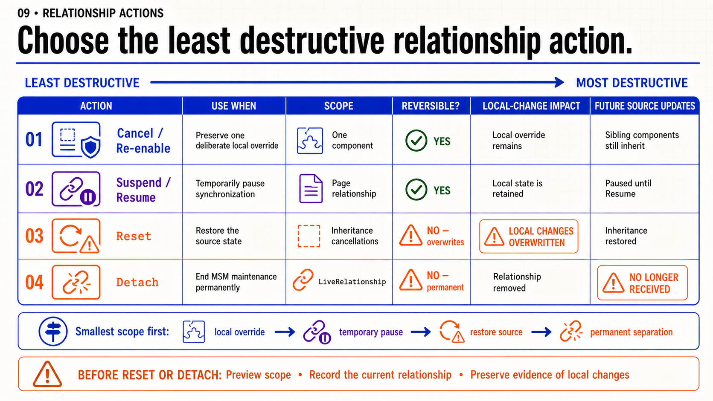
Detailed presenter notes
- Smallest scope: use component inheritance cancellation for one local exception.
- Temporary: Suspend and Resume pause and restore a page relationship.
- Caution: Reset overwrites local changes; Detach is permanent.
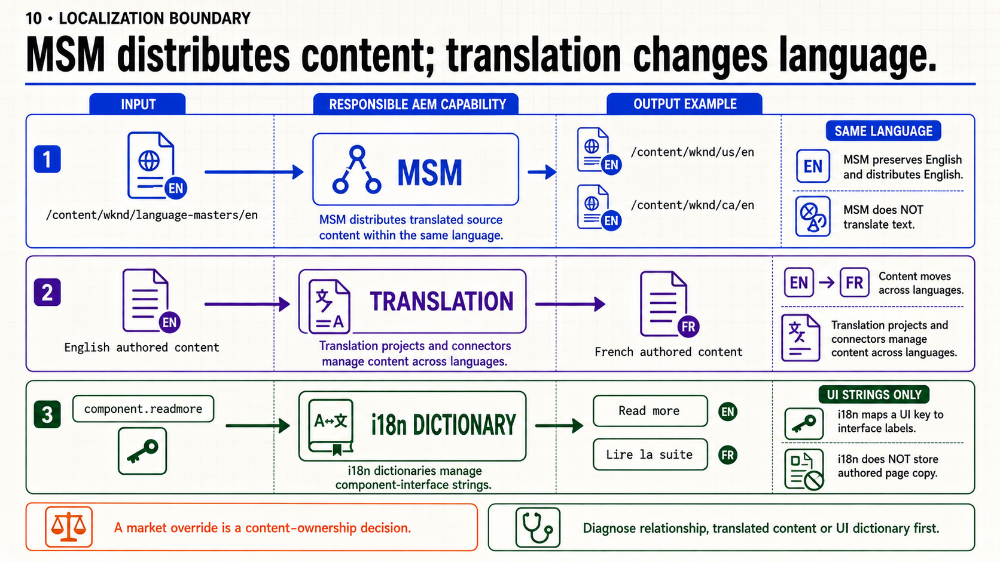
Detailed presenter notes
- MSM: distribute content to market sites within the same language.
- Translation: create and maintain authored content across languages.
- i18n: resolve component-interface labels, not authored page copy.
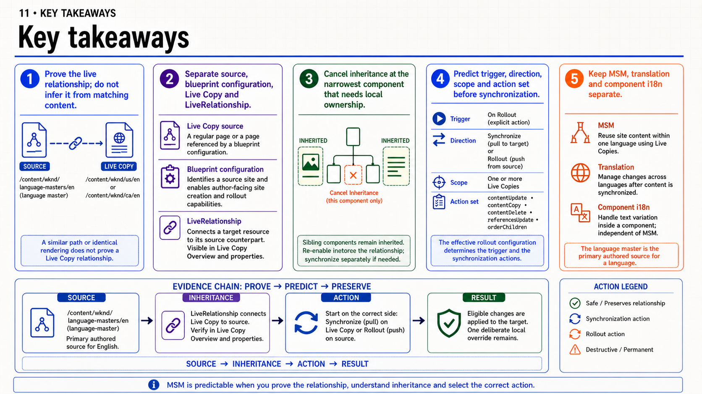
Detailed presenter notes
- Prove: identify the relationship and object roles.
- Predict: name inheritance, direction, scope and action set.
- Preserve: verify the intended inherited change and deliberate local override.
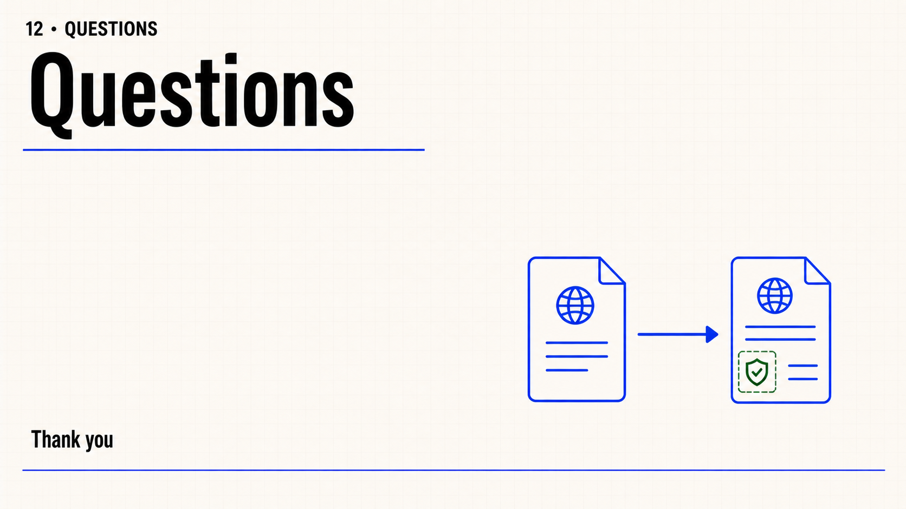
Detailed presenter notes
- Close: leave the slide open for audience questions.
- Boundary: do not add another prompt, recap or exercise.
Live Copy relationship practice
- Select one same-language source page and one corresponding Live Copy page.
- Record the source path, target path, relationship status and effective rollout configuration.
- Identify one inherited component and cancel inheritance on one component that needs a deliberate local value.
- Change the source, predict the result and run one controlled Synchronize or Rollout action.
- Record which inherited value changed and verify that the local override remained intact.
Acceptance: the evidence matrix identifies source, inherited or local state, selected action and result; the intended inherited value changes; the deliberate local override remains intact; the developer explains the action direction and scope.
Official reading
{kind=link}
{kind=link}
{kind=link}
{kind=link}
{kind=link}
{kind=link}
{kind=link}
{kind=link}
{kind=link}
{kind=link}
{kind=link}
{kind=link}